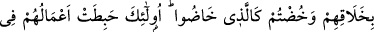

MÜNÂFIKLAR
61. İçlerinden bazıları da Peygamber’i incitirler: “O, (her söyleneni dinleyen) bir
kulaktır.” derler. De ki: “O sizin için hayırlı bir kulaktır. Allah’a inanır, müminlere
inanır. Sizden inananlar için de o bir rahmettir. Allah’ın Peygamberi’ni incitenlere